SMASH Senpai
Top 20 Anime Waifus of All Time (2026) – Ranked by Real Smash or Pass Votes
Anime waifus aren’t just about looks — they’re about presence, personality, emotional impact, and the way a character stays in your head long after the episode ends.
From iconic classics to modern fan favorites, some characters transcend their series and become cultural legends across anime communities worldwide.
This ranking isn’t random. These waifus are ordered using real engagement data from the SMASH Senpai Smash or Pass system — combining global votes, popularity trends, fan discussions, and long-term impact.
It’s not about one viral season or temporary hype. It’s about consistency, emotional connection, and how strongly fans continue to choose these characters over time.
These are the Top 20 Anime Waifus of All Time — ranked by real fans, real votes, and real obsession — defining what it truly means to be a legendary waifu.
Sponsored
#20 Frieren (smashes 949)
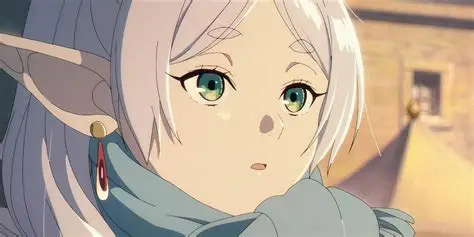Frieren from Frieren: Beyond Journey’s End stands out as a waifu defined by subtlety, emotional depth, and quiet strength. Unlike loud or overly expressive characters, Frieren’s charm comes from her calm demeanor and thoughtful personality. As an elf who has lived for hundreds of years, she experiences time differently, which gives her a mature and reflective outlook on life and relationships.
Beneath her gentle appearance lies overwhelming magical power. Frieren is one of the strongest mages in her world, capable of defeating powerful demons with ease. Her intelligence, elegance, and emotional restraint make her incredibly appealing to fans who prefer depth over flashiness. She proves that softness and strength can coexist, earning her a solid place in the top 20.

Wanna vote them yourself? Check it out here (not sponsored)
SMASH SENPAI – Smash or Pass#19 Leone (smashes 951)
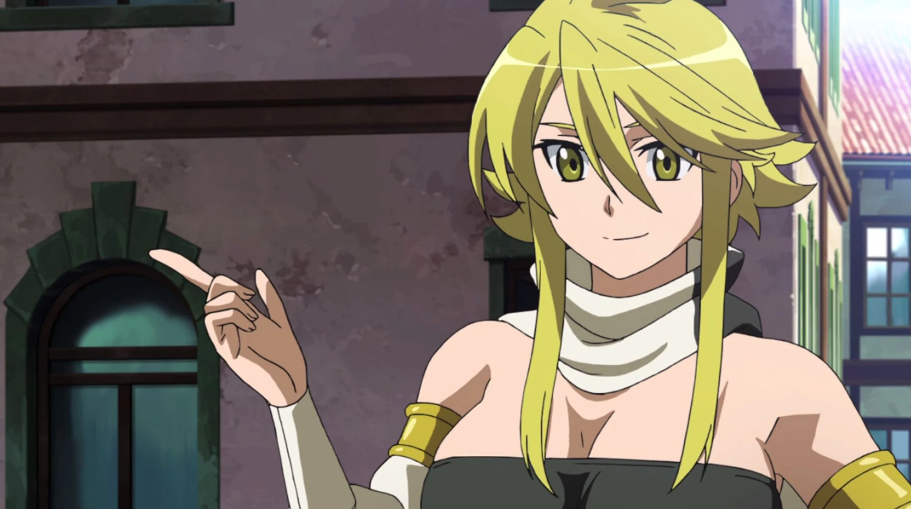Leone from Akame ga Kill! is bold, fearless, and unapologetically confident. She has a loud personality, loves to tease, and carries herself with an infectious sense of freedom. Leone doesn’t try to act refined or mysterious — her charm lies in her raw honesty and dominant energy.
Thanks to her Imperial Arms, Leone possesses enhanced strength and regeneration, making her a brutal close-range fighter. Despite her playful and carefree attitude, she deeply cares about her comrades and is willing to sacrifice everything for them. Her wild personality, strong physique, and fearless mindset make her incredibly attractive to fans who love confident and aggressive waifus.
#18 Akeno Himejima (smashes 954)
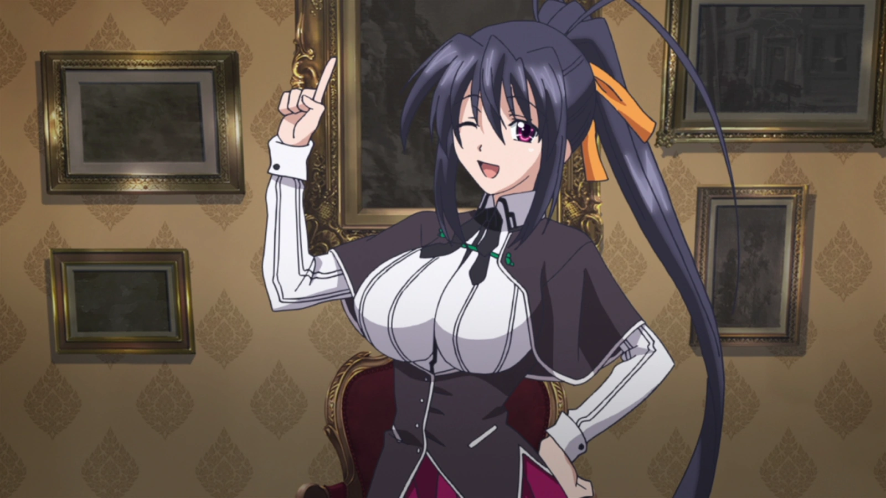Akeno Himejima from High School DxD is widely known for her seductive aura and teasing personality. She fully embraces her femininity and enjoys making others flustered, often hiding her true power behind a playful smile. This contrast between elegance and danger makes her extremely captivating.
In battle, Akeno is terrifying. She wields lightning and holy powers with ruthless efficiency, proving she is far more than just fan service. Her ability to switch between sweet and sadistic adds depth to her character. Combined with her mature design and commanding presence, Akeno remains one of the most iconic smash picks in anime.
#17 Erza Scarlet (smashes 955)
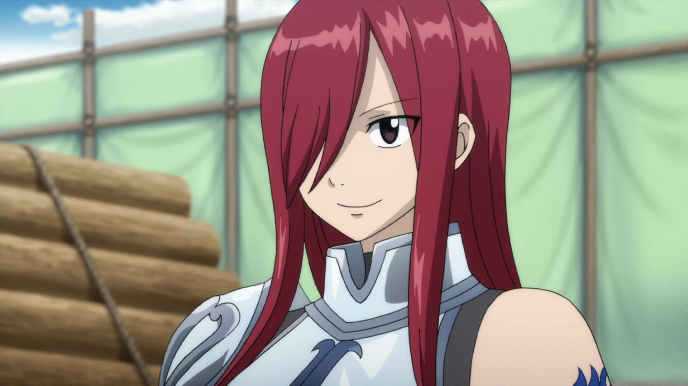Erza Scarlet from Fairy Tail is the embodiment of strength, discipline, and leadership. Known as Titania, she commands respect wherever she goes and rarely shows fear in battle. Her requip magic allows her to switch between countless armors and weapons, making her incredibly versatile and dangerous.
What makes Erza truly attractive is her balance between toughness and emotional vulnerability. She deeply values friendship and loyalty, and her softer moments make her feel human rather than distant. With her striking red hair and powerful presence, Erza appeals strongly to fans who admire dominant, dependable waifus.
#16 Tsunade Senju (smashes 955)
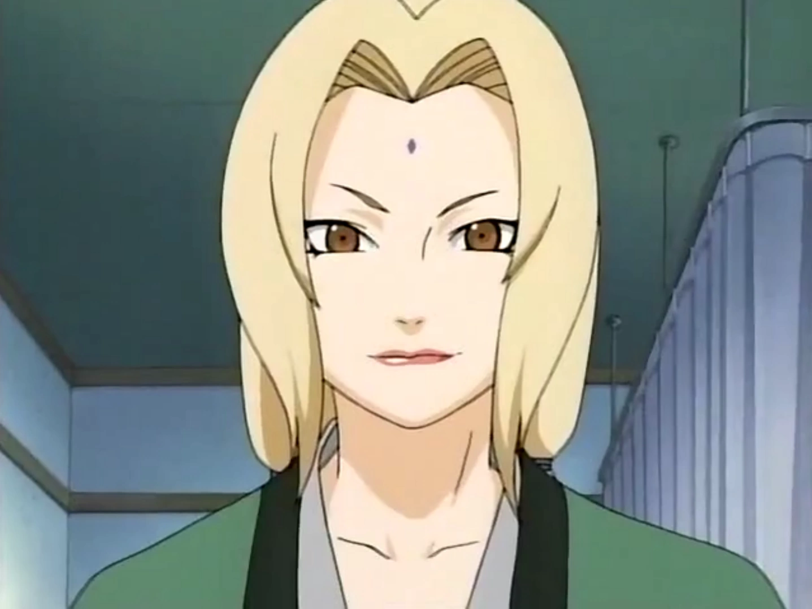Tsunade Senju from Naruto represents power, experience, and authority. As the Fifth Hokage, she is both a legendary ninja and one of the strongest medical specialists in the series. Her monstrous physical strength and near-immortal regeneration make her a terrifying opponent in battle.
Beyond her abilities, Tsunade’s confidence and mature personality make her incredibly appealing. She has endured loss and responsibility, which adds emotional depth to her character. Tsunade’s commanding presence and self-assured nature solidify her status as a classic anime waifu who continues to rank high even years later.
#15 Yoruichi Shihouin (smashes 958)
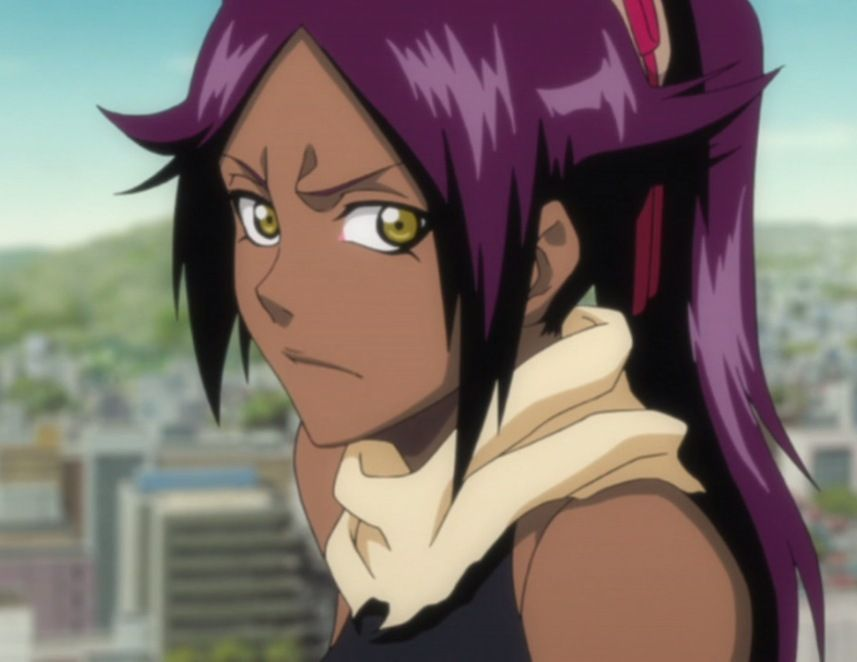Yoruichi Shihouin from Bleach is effortlessly cool, confident, and stylish. A former captain and elite assassin, she moves with unmatched speed and precision. Her relaxed attitude and playful teasing hide an incredibly sharp and dangerous warrior.
Yoruichi excels in hand-to-hand combat and lightning-based techniques, overwhelming enemies before they can react. Her athletic build, unique design, and confident smile make her instantly recognizable. Yoruichi’s mix of strength, humor, and dominance makes her one of the most universally loved waifus in anime history.
#14 Marin Kitagawa (Smashes: 959)

Marin Kitagawa from My Dress-Up Darling is one of the most relatable and modern anime waifus ever created. Her open-minded personality, expressive emotions, and genuine love for cosplay make her feel incredibly real. Marin is confident without being arrogant and passionate without being overbearing, which makes her stand out from traditional waifu archetypes.
What truly boosts Marin’s smash count is her authenticity. She supports Gojo wholeheartedly, respects his boundaries, and never hides who she is. Her chemistry-driven relationship and infectious enthusiasm helped her dominate anime social media. Marin represents a new era of waifus built on personality, connection, and confidence rather than just looks.
#13 Akari Watanabe (Smashes: 961)
Akari Watanabe from More Than a Married Couple, But Not Lovers is loud, emotional, and unapologetically affectionate. She wears her heart on her sleeve and isn’t afraid to show jealousy, love, or vulnerability. Her expressive personality makes every scene feel energetic and engaging.
Akari’s appeal lies in her realism. She feels like an actual teenager navigating feelings, insecurity, and attraction rather than a flawless fantasy character. Her emotional honesty and strong romantic presence earn her massive smash votes, especially from fans who value expressive and affectionate waifus.
#12 Mai Sakurajima (Smashes: 970)

Mai Sakurajima from Rascal Does Not Dream of Bunny Girl Senpai is calm, intelligent, and emotionally mature. She doesn’t rely on exaggerated reactions or fan service to stand out. Instead, her quiet confidence and sharp wit make her incredibly attractive.
Mai’s relationship with Sakuta is one of the most realistic and respected romances in anime. She communicates clearly, sets boundaries, and supports him without losing herself. Her composed personality combined with emotional depth explains why she consistently ranks high in smash-based popularity lists.
#11 Nami (Smashes: 970)
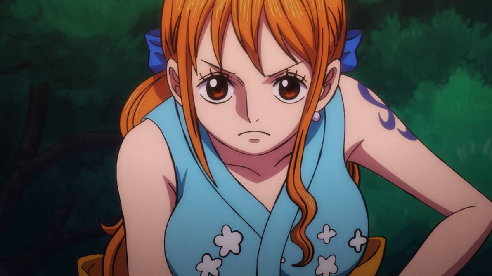Nami from One Piece is intelligent, ambitious, and fiercely independent. As the Straw Hats’ navigator, she plays a crucial role in the crew’s survival. Her confidence and sharp tongue make her one of the most memorable female characters in long-running anime.
Beyond her design, Nami’s tragic backstory and personal growth add emotional weight to her character. She balances toughness with vulnerability, making her both relatable and admirable. Decades of relevance and consistent character development explain her massive smash count even today.
#10 Shinobu Kocho (Smashes: 986)
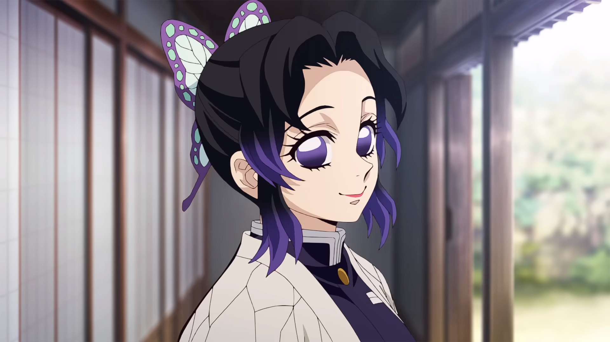Shinobu Kocho from Demon Slayer blends elegance with quiet menace. Her gentle smile and calm voice contrast sharply with her deadly combat style. Unlike other Demon Slayers, she relies on intelligence and poison rather than raw strength.
Shinobu’s appeal comes from this duality. She appears soft yet carries deep emotional pain and suppressed rage. Her graceful movements, sharp intellect, and tragic past resonate strongly with fans, earning her one of the highest smash counts in modern anime rankings.
#9 Reze (Smashes: 987)
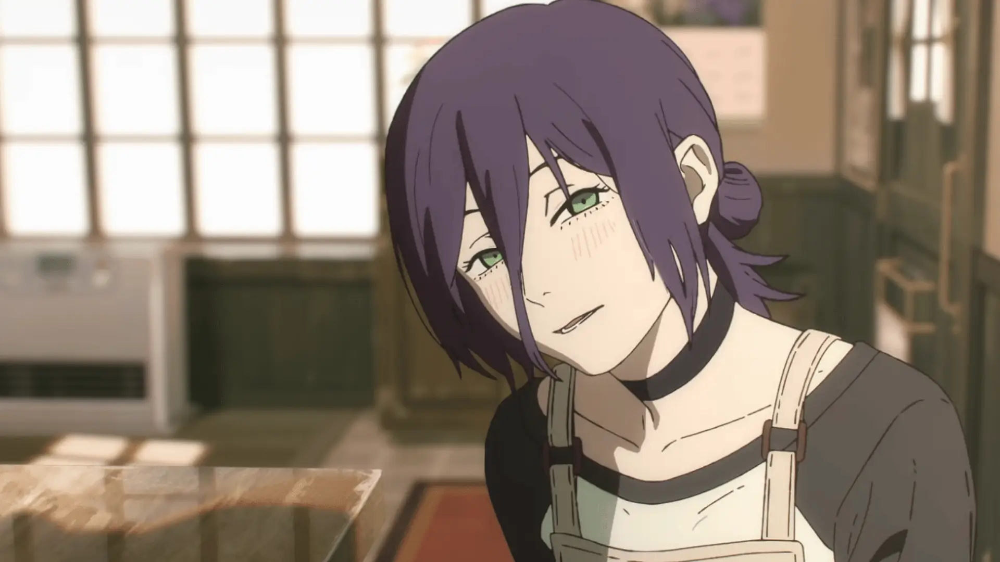Reze from Chainsaw Man is dangerous, unpredictable, and emotionally complex. She initially presents herself as sweet and affectionate, only to reveal a ruthless and violent side beneath the surface. This unpredictability makes her incredibly captivating.
Her tragic backstory and conflicting emotions add depth to her role, making her more than just an antagonist. Reze’s mix of romance, brutality, and emotional vulnerability explains her explosive smash popularity despite limited screen time.
#8 Darkness (Smashes: 990)
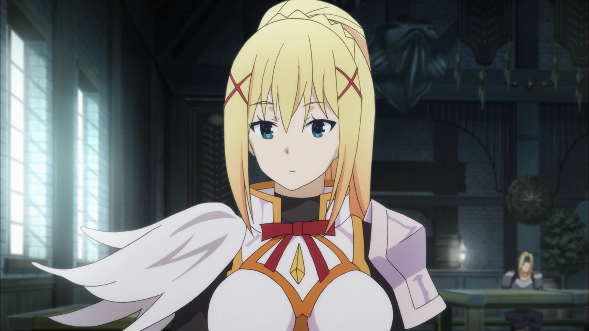Darkness from KonoSuba is chaotic, loyal, and hilariously unhinged. As a crusader, she possesses incredible durability but intentionally fails at combat due to her extreme masochistic tendencies.
Her popularity comes from how shamelessly unique she is. Darkness embraces her flaws and desires without restraint, creating nonstop comedic moments. This exaggerated personality, combined with genuine loyalty and bravery, makes her one of the most memorable and smash-worthy comedy waifus ever.
#7 Mitsuri Kanroji (Smashes: 1003)
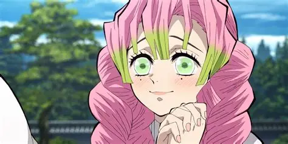Mitsuri Kanroji from Demon Slayer radiates warmth, kindness, and emotional openness. She is cheerful, affectionate, and deeply empathetic, making her stand out among the intense cast of Hashira.
What boosts Mitsuri’s smash count is her emotional sincerity. She openly expresses love, values connection, and embraces her femininity without shame. Combined with her impressive combat ability and tragic determination, Mitsuri represents emotional strength, earning her a devoted fanbase worldwide.
#6 Fubuki (Smashes: 1009)
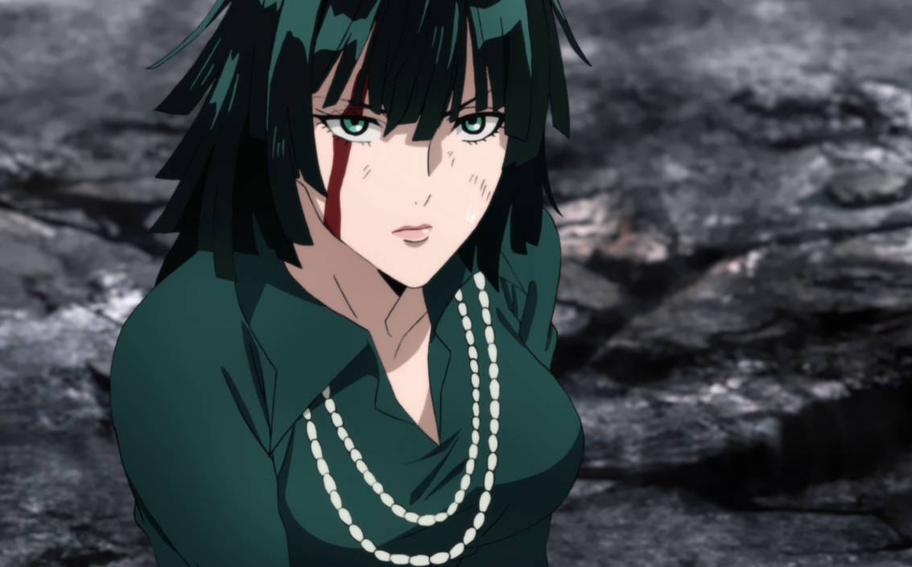Fubuki from One Punch Man is stylish, intelligent, and socially dominant. As the leader of the Blizzard Group, she exerts control through strategy rather than brute force. Her composed attitude and confidence make her extremely attractive to fans.
Fubuki’s appeal comes from her balance of elegance and insecurity. While she presents herself as flawless, she struggles with self-worth and comparison. This layered personality makes her relatable and human, earning her massive smash support across the anime community.
#5 Zero Two (Smashes: 1012)

Zero Two from Darling in the Franxx is one of the most iconic anime waifus of the last decade. Her bold confidence, teasing behavior, and intense emotional attachment make her unforgettable. She commands attention in every scene she appears in.
Beneath her playful dominance lies deep loneliness and a desire for acceptance. Her tragic past and emotional dependence on Hiro create a powerful narrative that resonated with millions of fans. This emotional volatility combined with her striking design explains her consistently high smash numbers.
#4 YorHa No.2 Type B (Smashes: 1060)
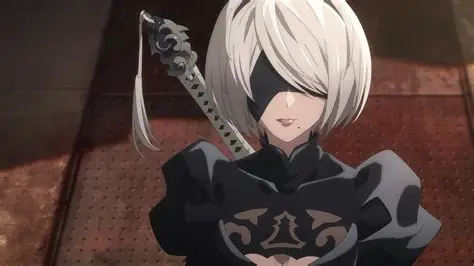YorHa No.2 Type B, commonly known as 2B from NieR: Automata, blends elegance, mystery, and quiet emotional depth. Her calm demeanor and reserved personality hide intense inner conflict and suppressed emotions, making her incredibly compelling.
2B’s design is iconic, but her popularity goes far beyond appearance. Her story explores identity, loss, and purpose, creating a strong emotional bond with fans. The contrast between her stoic exterior and hidden vulnerability drives her massive smash count and cements her as a modern waifu legend.
#3 Rumi Usagiyama (Smashes: 1064)
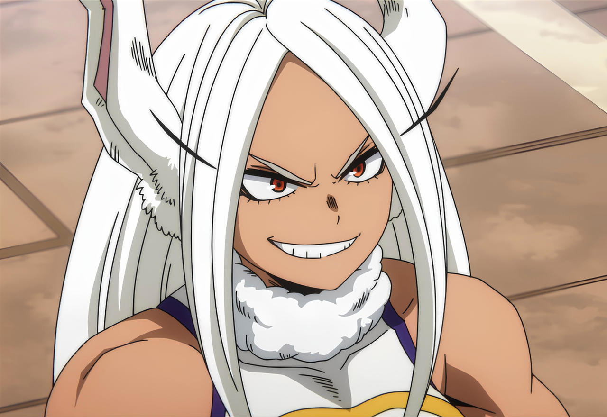Rumi Usagiyama, also known as Mirko from My Hero Academia, is pure dominance and confidence. She is aggressive, fearless, and thrives in battle without relying on backup. Her muscular build, sharp instincts, and wild personality completely break traditional anime waifu norms.
What makes Rumi rank so high is her unapologetic strength. She doesn’t soften herself to appeal to others and refuses to play a supporting role. Fans admire her independence, combat obsession, and raw energy. Mirko represents power without compromise, which is why she dominates smash votes across the anime community.
#2 Esdeath (1073 Smashes)
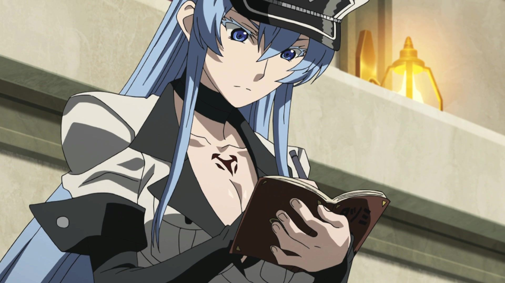Esdeath from Akame ga Kill! takes the second spot thanks to her overwhelming presence and unapologetic dominance. She is powerful, ruthless, confident, and fully aware of her own appeal. Unlike many waifus who grow into their strength, Esdeath enters the story already at the peak, commanding fear and admiration wherever she goes.
What truly sets Esdeath apart is how boldly she embraces who she is. She doesn’t seek approval, and she doesn’t soften herself to be liked. Her twisted sense of love, combined with her icy charisma, creates a dangerous allure that fans find irresistible. Love her or fear her, Esdeath leaves an unforgettable impression, making her a clear and undeniable choice for the top rank.
#1 Yor Forger (1190 Smashes)
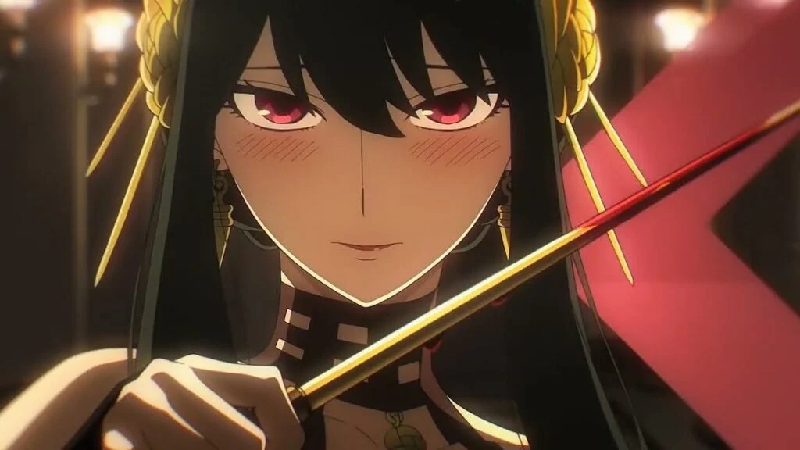Yor Forger from Spy x Family is a perfect blend of elegance, danger, and pure charm. At first glance, she appears shy, soft-spoken, and socially awkward, which immediately makes her lovable. But beneath that gentle exterior lies one of the deadliest assassins in anime, creating a contrast that fans absolutely adore. This duality is what makes Yor stand out in a sea of waifus.
Her awkward attempts at living a normal life, combined with her fierce combat skills, lead to countless memorable moments. Yor’s genuine desire to protect her family, even when she doesn’t fully understand her own emotions, gives her depth beyond just looks. That emotional sincerity, paired with her strength, is why she consistently ranks near the very top.
Play Smash or Pass on SMASH Senpai.
 PLAY SMASH OR PASS
PLAY SMASH OR PASS